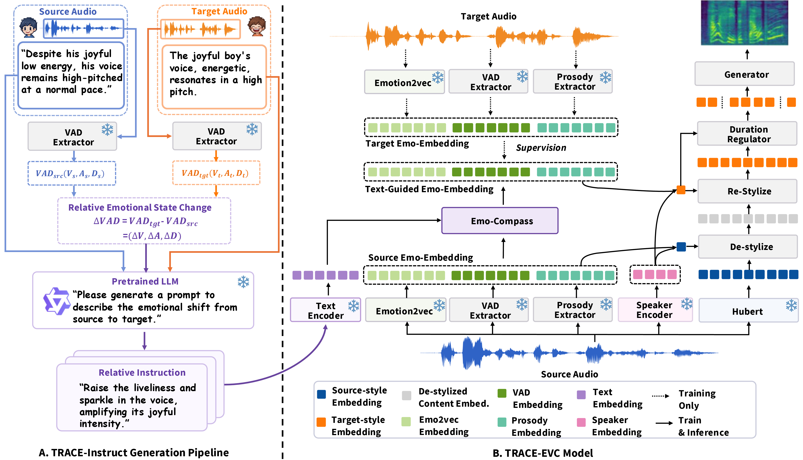
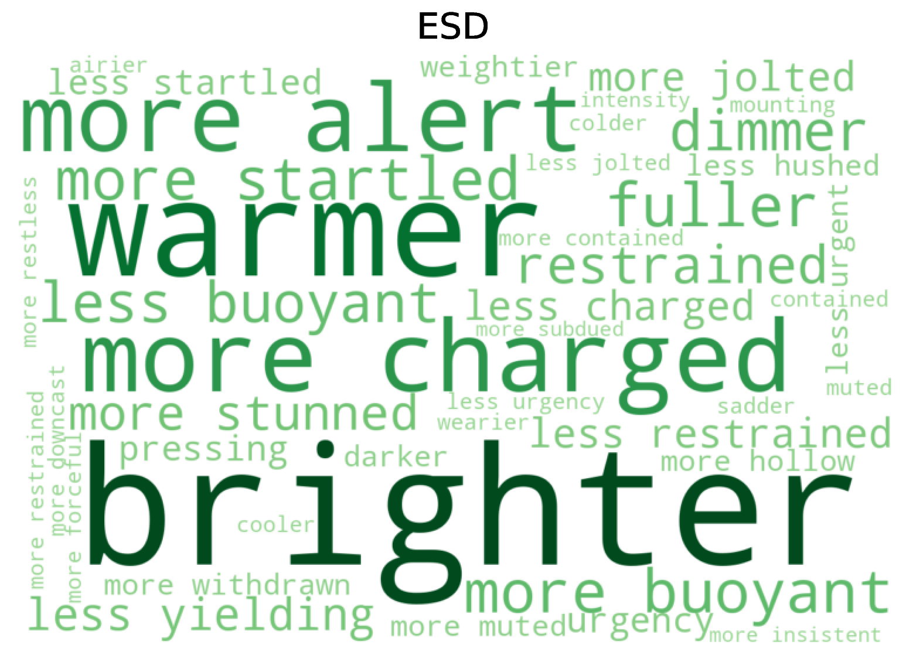
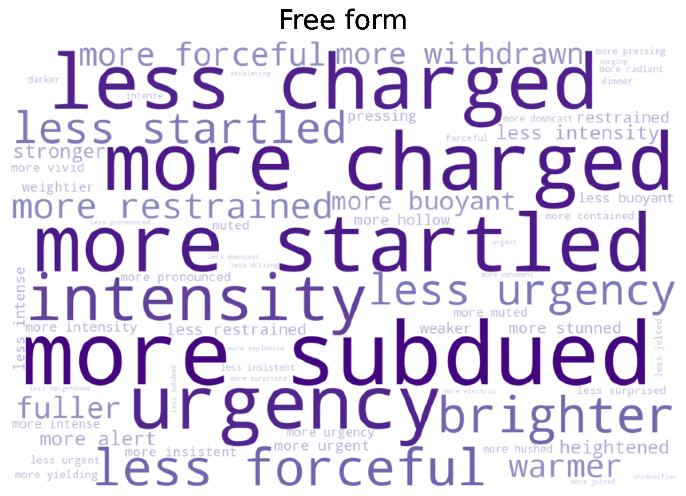
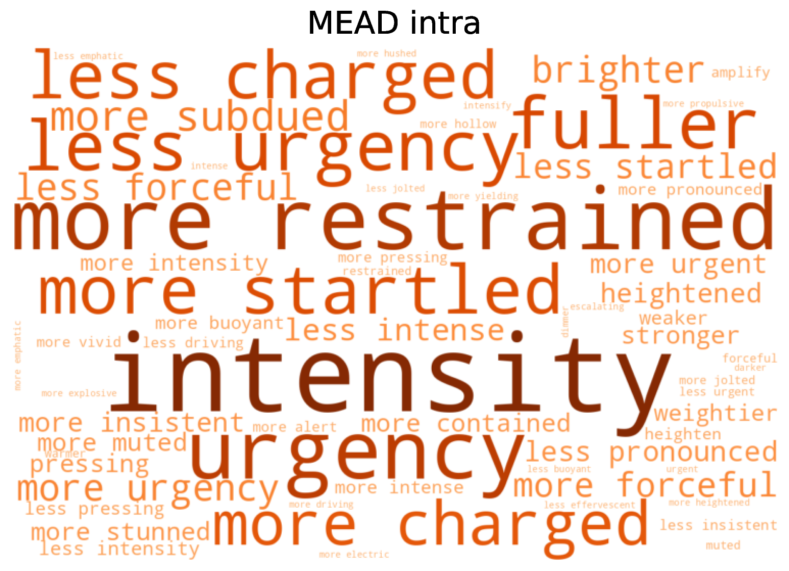

IEEE SLT 2026 · under review
TRACE‑EVC: Text‑Guided Relative Affective Control for Zero‑Shot Emotional Voice Conversion
Details omitted for double-blind review
Abstract
Traditional emotional voice conversion (EVC) conditions generation on explicit target emotions like labels or references, defining the target affective state but omitting the direction or nature of the transition. We introduce instruction-guided relative emotional voice conversion, a task where natural-language instructions specify source-conditioned affective transformations (e.g., “make the speech slightly calmer” or “sound noticeably more confident”) instead of fixed targets. To support this task, we construct TRACE-Instruct, a dataset of relative emotion instructions covering categorical transitions, intensity modifications, and open-ended affective changes. We propose TRACE-EVC, a zero-shot framework built around Emo-Compass, a module that models each conversion as a source-anchored rectified flow. Rather than conditioning on an explicit target, it predicts the direction and degree of the affective change. Experiments demonstrate that TRACE-EVC accurately follows relative emotion instructions while preserving speaker identity, linguistic content, and speech quality, and remains competitive with conventional EVC systems on standard categorical emotion conversion.
Overview

Contributions
Instruction-guided relative EVC
We introduce a new EVC task in which natural-language instructions specify source-conditioned affective transformations rather than explicit target emotions, enabling both categorical emotion transitions and fine-grained intensity modification.
TRACE-Instruct
We construct TRACE-Instruct, a dataset of relative emotion instructions that supports training and evaluation for instruction-guided relative EVC across categorical transitions, intensity modifications, and open-ended affective transformations. The instructions are publicly released to support further research.
TRACE-EVC
We propose TRACE-EVC, whose Emo-Compass casts relative emotion control as a source-anchored rectified flow, enabling zero-shot EVC without target labels or reference utterances while supporting flexible instruction following and fine-grained emotion control.
TRACE-Instruct Prompts
This section provides three views of TRACE-Instruct:
- SER Evaluation — comparison of the VAD prediction models used to build the instruction pipeline;
- Word Cloud — a lexical overview of the relative emotion instructions;
- Demo — TextrolSpeech style descriptions paired with their corresponding relative instructions and audio.
The relative emotion instructions are publicly released on Hugging Face to support further research on instruction-guided emotional voice conversion.
Click the tabs below to switch between different views of TRACE-Instruct.
The TRACE-Instruct pipeline estimates valence–arousal–dominance (VAD) with a speech emotion recognition model. We compare candidate models on MSP-Podcast, a large corpus of naturalistic, spontaneous emotional speech with dimensional VAD annotations, making it the standard benchmark for VAD prediction. We adopt the WavLM-based model released with the Odyssey 2024 Speech Emotion Recognition Challenge, which yields the most consistent VAD predictions across all three dimensions among the compared models, and use it as the VAD extractor throughout the pipeline.
| Model | CCC-V ↑ | CCC-A ↑ | CCC-D ↑ | Avg. CCC ↑ | Avg. Pearson ↑ | Avg. MAE ↓ | Avg. RMSE ↓ |
|---|---|---|---|---|---|---|---|
| Odyssey WavLM | 0.621 | 0.652 | 0.580 | 0.618 | 0.621 | 0.104 | 0.135 |
| Tiantiaf WavLM | 0.610 | 0.629 | 0.557 | 0.598 | 0.606 | 0.109 | 0.141 |
| MERaLiON | 0.587 | 0.624 | 0.562 | 0.591 | 0.604 | 0.104 | 0.134 |
| audeering W2V2 | 0.593 | 0.621 | 0.522 | 0.579 | 0.600 | 0.107 | 0.138 |



Word clouds of the relative emotion instructions in TRACE-Instruct, by instruction type.
TRACE-Instruct provides natural-language descriptions of the affective change from the source speech to the target speech, whereas TextrolSpeech describes a single utterance.
“The man shares his indignant thoughts with a natural pitch, maintaining a typical speaking speed and energy level.”
“The male speaker, with a high pitch, delivered his surprised message at a normal pace with normal energy.”
“The flatness cracks—suddenly sharper, more startled than before, a quick lift in pitch mid-line, a breath caught.”
“Speaking with fervor, the enraged male speaker’s high-pitched voice resonates.”
“The joyful man’s high-pitched speech carried a touch of low energy as he engaged in normal-speed delivery.”
“The flat weight lifts first, then the tone sparkles brighter than before, warmer in timbre, the air light and clear.”
“The despondent man expresses himself in a usual pitch, maintaining a standard speaking speed and energy level.”
“With standard pitch, the despondent man talks at a regular speed, maintaining normal energy throughout.”
“A whisper lighter than before, the tone lifting gently, pitch nudging up with quiet ease and softening the weight.”
Audio Samples
As qualitative evidence for the results reported in the paper, we present three groups of demos:
- Baseline comparison — categorical emotion conversion on ESD compared against label- and reference-based EVC systems;
- Inter-emotion — instruction-guided categorical emotion conversion on ESD;
- Intra-emotion — instruction-guided relative intensity conversion on MEAD.
Converting between Neutral, Happy, Angry, Sad, and Surprise on ESD. Click a conversion-pair tab below to listen to the source input and compare each model’s converted output.
Note: SGEVC is adapted to condition directly on the target emotion label via its label-supervised categorical emotion latent. TRACE-EVC observes only the relative instruction, with explicit emotion words filtered out.
| Model | Model input | Converted output |
|---|---|---|
| SGEVC | LabelsSadSpeaker 0018 |
|
| DurFlex-EVC | LabelsSadSpeaker 0018 |
|
| ZEST | Reference |
|
| VEVO | Reference |
|
| TRACE-EVC (Ours) | Instruction“Drag it lower, growing more downcast, weary and flat, the voice sinking like ash.” |
| Model | Model input | Converted output |
|---|---|---|
| SGEVC | LabelsNeutralSpeaker 0016 |
|
| DurFlex-EVC | LabelsNeutralSpeaker 0016 |
|
| ZEST | Reference |
|
| VEVO | Reference |
|
| TRACE-EVC (Ours) | Instruction“Let it calm, less coloured and more level than it was — a slight catch in the breath.” |
| Model | Model input | Converted output |
|---|---|---|
| SGEVC | LabelsSurpriseSpeaker 0016 |
|
| DurFlex-EVC | LabelsSurpriseSpeaker 0016 |
|
| ZEST | Reference |
|
| VEVO | Reference |
|
| TRACE-EVC (Ours) | Instruction“Jolt it — noticeably more startled, sharper, breath catching mid-phrase, eyes snapping open.” |
| Model | Model input | Converted output |
|---|---|---|
| SGEVC | LabelsNeutralSpeaker 0014 |
|
| DurFlex-EVC | LabelsNeutralSpeaker 0014 |
|
| ZEST | Reference |
|
| VEVO | Reference |
|
| TRACE-EVC (Ours) | Instruction“Turn it plainer and smoother, less sharp and less rushed, the pacing settling steadier.” |
| Model | Model input | Converted output |
|---|---|---|
| SGEVC | LabelsAngrySpeaker 0012 |
|
| DurFlex-EVC | LabelsAngrySpeaker 0012 |
|
| ZEST | Reference |
|
| VEVO | Reference |
|
| TRACE-EVC (Ours) | Instruction“Sharpen it until it sounds angrier, the vowels bitten, a half-beat of pressure before each word, held taut.” |
| Model | Model input | Converted output |
|---|---|---|
| SGEVC | LabelsNeutralSpeaker 0016 |
|
| DurFlex-EVC | LabelsNeutralSpeaker 0016 |
|
| ZEST | Reference |
|
| VEVO | Reference |
|
| TRACE-EVC (Ours) | Instruction“Cool it down until it settles calmer than before, steadier and softer, a warmer timbre beneath the surface.” |
| Model | Model input | Converted output |
|---|---|---|
| SGEVC | LabelsHappySpeaker 0018 |
|
| DurFlex-EVC | LabelsHappySpeaker 0018 |
|
| ZEST | Reference |
|
| VEVO | Reference |
|
| TRACE-EVC (Ours) | Instruction“Brighten it so a little more joy comes through, eyes soft, the voice opening like a window left ajar, no tempo shift.” |
| Model | Model input | Converted output |
|---|---|---|
| SGEVC | LabelsNeutralSpeaker 0014 |
|
| DurFlex-EVC | LabelsNeutralSpeaker 0014 |
|
| ZEST | Reference |
|
| VEVO | Reference |
|
| TRACE-EVC (Ours) | Instruction“Make the audio slightly quieter, flatter and more even, with a warm stillness beneath the voice.” |
Instruction-guided categorical emotion conversion on ESD.
| Instruction | Source | TRACE-EVC (Ours) |
|---|---|---|
| “Bring more heat and tension into the voice, making it sharper and more irritated than before while preserving the original pacing.” | ||
| “Let the restrained, even delivery open into something lighter and more joyful, with greater warmth and buoyancy in the voice.” | ||
| “Draw the voice further downward into sorrow, making it more subdued and downcast without adding energy or noticeably changing the tempo.” | ||
| “More disbelief in the voice than the previous version—a soft upward lilt at the end, a half-beat pause in the middle, but unforced, like it just slipped out.” | ||
| “A few degrees less aggressive than at its peak, the tone settles toward calm and neutral without brightening the timbre.” | ||
| “Let the voice sink further into sorrow, with the pitch drifting lower and the energy gradually contracting into a more subdued delivery.” | ||
| “Soften the sudden amazement into a quieter, warmer happiness, retaining some of the lifted pitch while making the delivery more serene.” | ||
| “Speak with a sharper, more forceful energy, letting the heaviness harden into anger while maintaining a driving intensity.” | ||
| “Speak with a lighter, more buoyant energy, letting the heaviness lift into joy while maintaining a warm, easy flow.” | ||
| “Lift the voice slightly out of its low restraint, bringing it closer to a balanced, neutral delivery with a little more energy and openness.” |
Instruction-guided relative intensity conversion on MEAD.
| Instruction | Source | TRACE-EVC (Ours) |
|---|---|---|
| “Speak with far less anger, softening the intensity while keeping the frustration clear.” | ||
| “Make the speech noticeably more furious, amplifying the anger with greater intensity and force.” | ||
| “Reduce the energy and enthusiasm in the speech to make it more subdued while keeping the joyful tone.” | ||
| “Make the speech more cheerful and lively, adding a touch more upbeat energy.” | ||
| “Let the sadness sink deeper, giving the voice a heavier, more mournful weight.” | ||
| “Lighten the sorrow a little, easing the heaviness in the tone.” | ||
| “Let the surprise burst out more, with a sharper gasp and a brighter, more startled lift in the voice.” | ||
| “Let the surprise settle, easing the startle into a calmer, more even reaction with the voice dropping back down.” | ||
| “Reduce the anger, speaking with less heat and force.” | ||
| “Calm the surprise gentler and more subdued, with a softer, less startled tone.” |